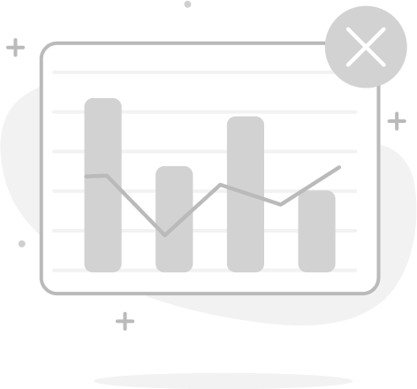

<div class="charts-layout">
  <div class="chart-column">
    <!-- Prikaz dugmeta za izbor grafikona samo ako nije mobilni prikaz -->
    @if (!isMobile) {
      <div class="chart-top-controls">
        <mat-select
          [(value)]="selectedChart"
          disableRipple
          panelClass="chart-type-panel"
          class="chart-type-button"
        >
          @for (type of chartTypes; track type.value) {
            <mat-option [value]="type.value">{{ type.label }}</mat-option>
          }
        </mat-select>
      </div>
    }

    <!-- Prikaz grafikona -->
    <div class="chart-content">
      @switch (selectedChart) {
        @case ('treemap') {
          @if (hasDataToDisplay) {
            <app-treemap-graph
              [categories]="categories"
              [refreshTrigger]="refreshCount"
              [startDate]="pendingFromDate"
              [endDate]="pendingToDate"
              [direction]="selectedDirection">
            </app-treemap-graph>

          } @else {
            <div class="empty-state">
              
              <h2>No categorized transactions available</h2>
              <p>Try selecting a different date range or categorize your transactions.</p>
            </div>
          }
        }

        @case ('pie') {
          @if (hasDataToDisplay) {
            <app-pie-chart-graph echarts class="pie-chart" 
            [categories]="categories" 
            [transactions]="transactions" 
            [refreshTrigger]="refreshTrigger"/>
          } @else {
            <div class="empty-state">
              
              <h2>No categorized transactions available</h2>
              <p>Try selecting a different date range or categorize your transactions.</p>
            </div>
          }
        }

        @case ('bar') {
          <p>Bar chart will be implemented soon.</p>
        }
      }
    </div>
  </div>
</div>
